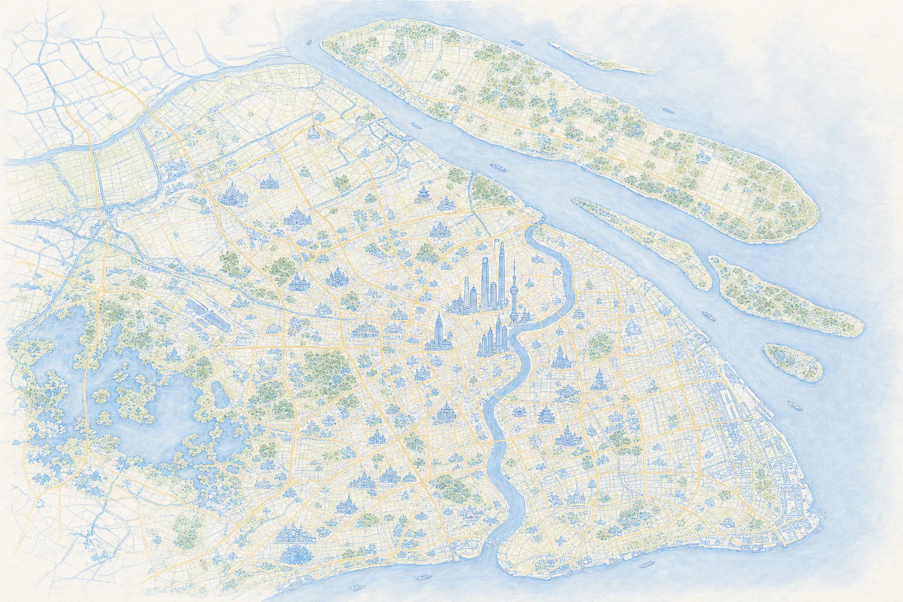

给自己一点空间 / A LITTLE ROOM FOR YOU
此刻，你想在城市里
找一处怎样的地方？
说说你想做什么，剩下的慢慢挑。
百度真实地点与路线回放 · 无需登录
演示样本采集于 2026.09.29，非实时查询
一次小小的城市出走
把时间，留给想做的事。
02 / 地点与取舍
百度数据回放附近可考虑的地方
路线时长来自百度步行规划样本；评分与价格为采集时字段。营业、噪声与座位请出发前确认。

给自己一点空间 / A LITTLE ROOM FOR YOU
说说你想做什么，剩下的慢慢挑。
百度真实地点与路线回放 · 无需登录
演示样本采集于 2026.09.29，非实时查询
一次小小的城市出走
02 / 地点与取舍
百度数据回放路线时长来自百度步行规划样本；评分与价格为采集时字段。营业、噪声与座位请出发前确认。